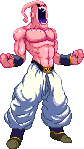
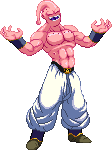

activate Hunger Mode (LV2)
Activating Hunger Mode makes Buu tougher and denser!
This changes a few things, gameplay-wise.
- At activation, you will see an empty Majin 'M' symbol (which acts as a bar/gauge) added to the screen. Its level is indicated by the color that the 'M' gets filled up with: yellow = Lv1, red = Lv2, black = Lv3.
- Power Charge is replaced by Hunger Charge, which fills up his Hunger Bar.
- Blocking the enemy's attacks also fills up the Hunger Bar, but only from Level 1 and upwards.
- Buu gains armor from Level 1 and upwards, indicated by his exhaust of steam.
- You gain 1 hit of armor at any Level which needs to recharge after hit once. The higher level you're at, the shorter this recharge takes.
- Getting hit still deals full damage to Buu, but he won't go into hitstun as long as he's got armor.
- Gain access to the Mega Candy Beam, detailed below.
- All Supers cost 1 Power Bar meter less to perform but take you out of the mode upon activation.
- Kill You gains Finishers at the end, there being three variants (Lv1, Lv2, Lv3).
- At activation, you will see an empty Majin 'M' symbol (which acts as a bar/gauge) added to the screen. Its level is indicated by the color that the 'M' gets filled up with: yellow = Lv1, red = Lv2, black = Lv3.
- Power Charge is replaced by Hunger Charge, which fills up his Hunger Bar.
- Blocking the enemy's attacks also fills up the Hunger Bar, but only from Level 1 and upwards.
- Buu gains armor from Level 1 and upwards, indicated by his exhaust of steam.
- You gain 1 hit of armor at any Level which needs to recharge after hit once. The higher level you're at, the shorter this recharge takes.
- Getting hit still deals full damage to Buu, but he won't go into hitstun as long as he's got armor.
- Gain access to the Mega Candy Beam, detailed below.
- All Supers cost 1 Power Bar meter less to perform but take you out of the mode upon activation.
- Kill You gains Finishers at the end, there being three variants (Lv1, Lv2, Lv3).

Mega Candy Beam
This is Buu's Hunger Mode cancel move, using all of the current
Hunger Bar and pouring it into this one attack. The Mega Candy Beam is a full-screen attack
that turns the enemy into a piece of candy. The more your Hunger Bar was filled,
the longer the enemy is forced to remain a candy. This gives you ample time to
power up, taunt, take a sip of your drink or think of ways of continuing your attack!